Add Finishes to Rooms and Columns

Sometimes adding wall and floor layers in Edit Type settings is not enough to meet BIM requirements and it is necessary to create separate elements aligned to structural components. To avoid spending too much time on this tedious task we can use our structural elements and Rooms as a references to create the necessary finish surfaces a little faster using Dynamo. To begin lets take a simple layout that includes walls, floors and a few columns...
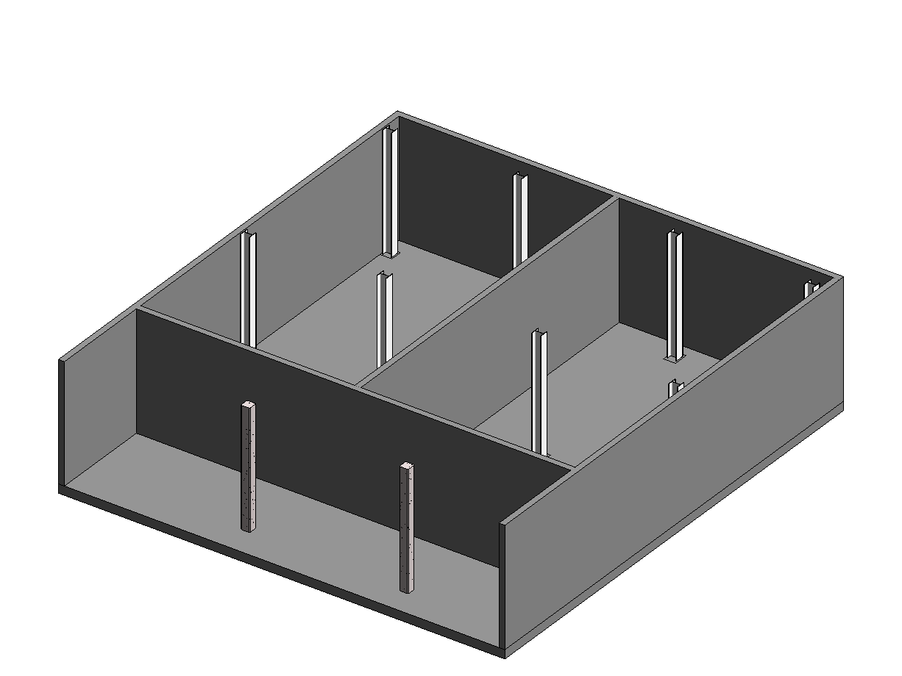
...add the finish material types that we will be using...
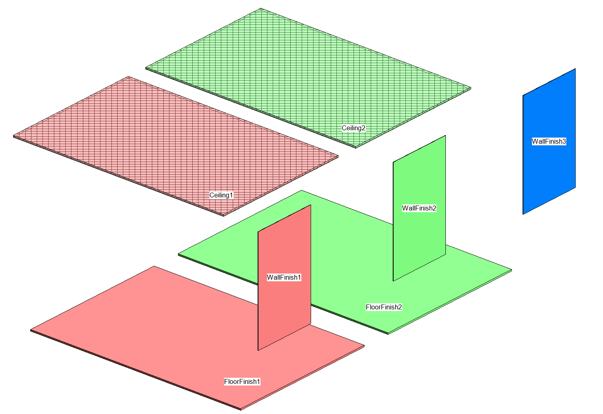
...and create rooms and place room separator lines (if necessary) within the walls and incluing the columns you are interested in adding a finish to.
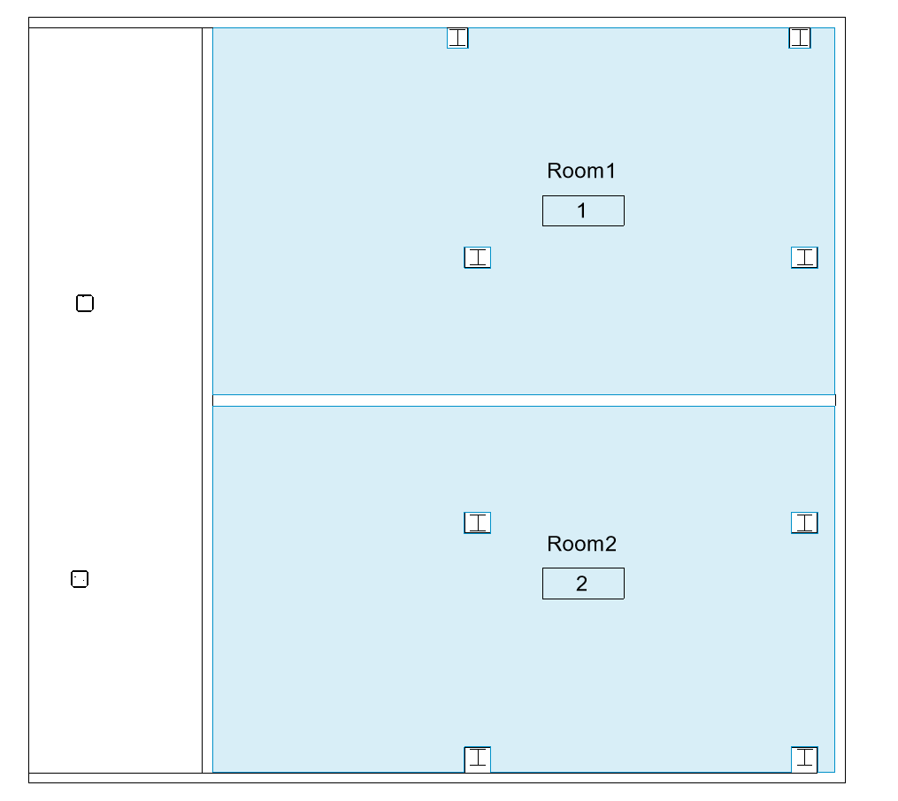
We will configure our rooms as following
- Choose the paramter you wish to use to filter only the rooms to be affected by the script. By default it is set to "Comments" and the parameter value is "DO".
- Fill out the Ceiling Finish, Wall Finish and Floor finish parameters with the exact names of the ceiling type, wall type and floor type that you will be using.
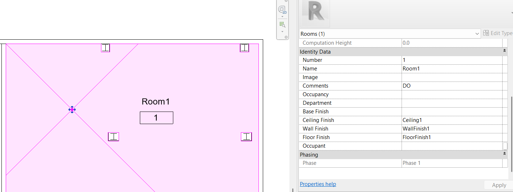
Make sure your rooms have correct height and are correctly enclosed. And with our layout ready and elements prepared lets look at the script to make sure we are using it correctly.
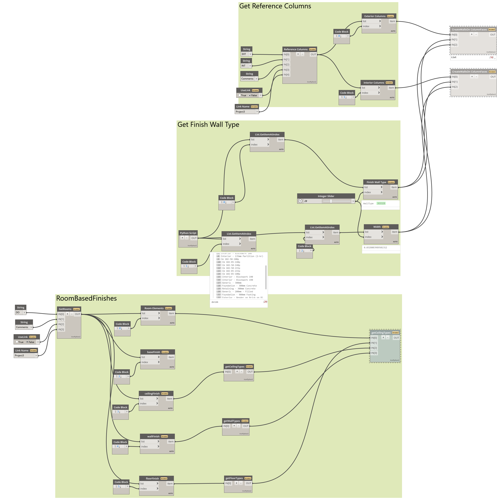
The "Room Based Finishes" work independently from the rest of the script. The only thing that is needed here is the VALUE and the NAME of the parameter we used to filter out our rooms. In case you are using rooms from a linked model modify "UseLink" and "Link Name" nodes accordingly.
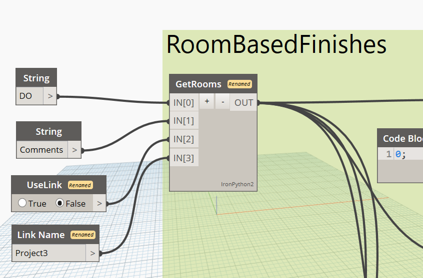
Run the script with the node at the end of the algorythm frozen and if the data collecting nodes seems to work properly run the execution node. Your reference walls and columns inside rooms should be covered with finish elements.
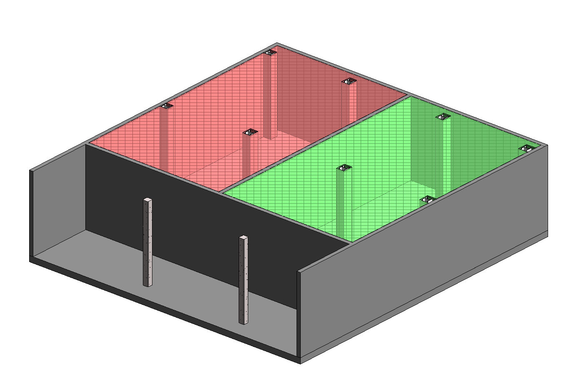
As you probably have noticed we left out a couple of columns outside of the created rooms. To cover those with finish walls we need to look at the rest of the script. It starts the same except with 2 filtering parameter options. In this example case we will set the Comments parameter of those 2 columns to EXT but it can be any other type of text parameter of your choosing.
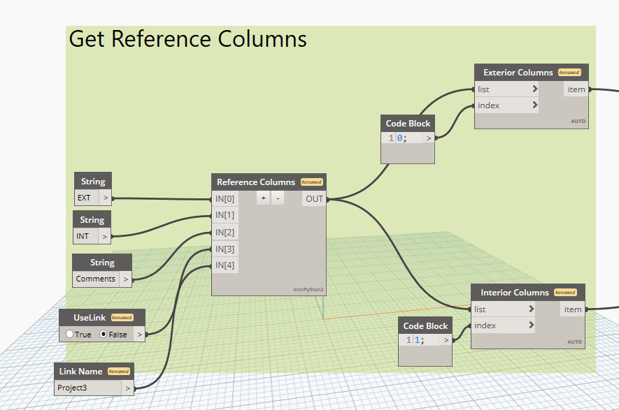
Since columns do not have corresponding "Finish" parameters built in, we will need to get a finishTypeElement from another node. This part of the script takes all wall types and allows you to select one Wall Type using the index slider. Just like before run the script with the executing node frozen and configure the data. Once the data displays correctly unfreeze the last node and run the script. It should cover the exact shape of the column.
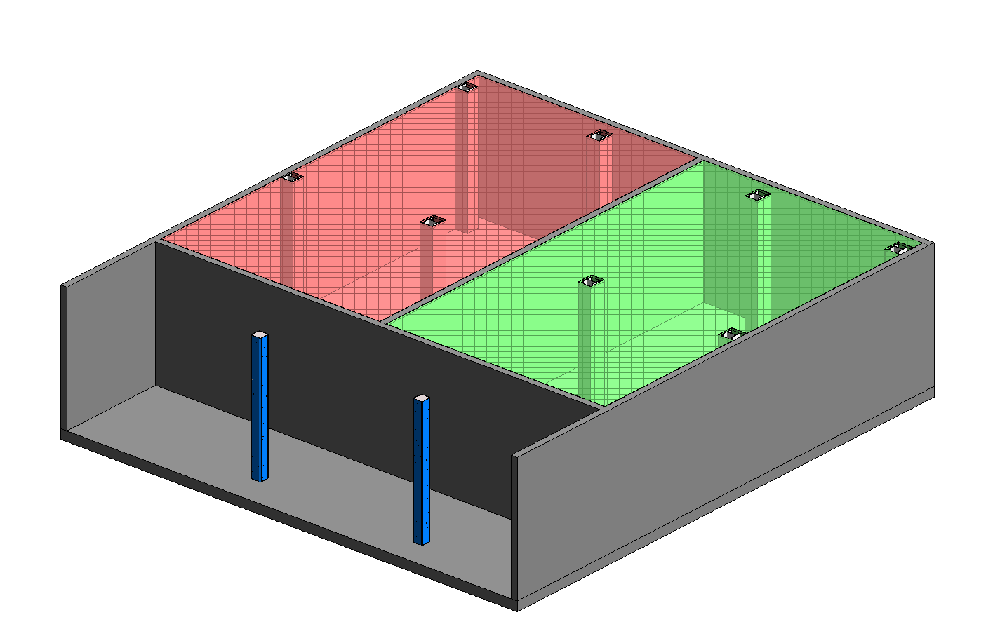
If your column happened to have a more complex shape like a steel column the effect will look like this:
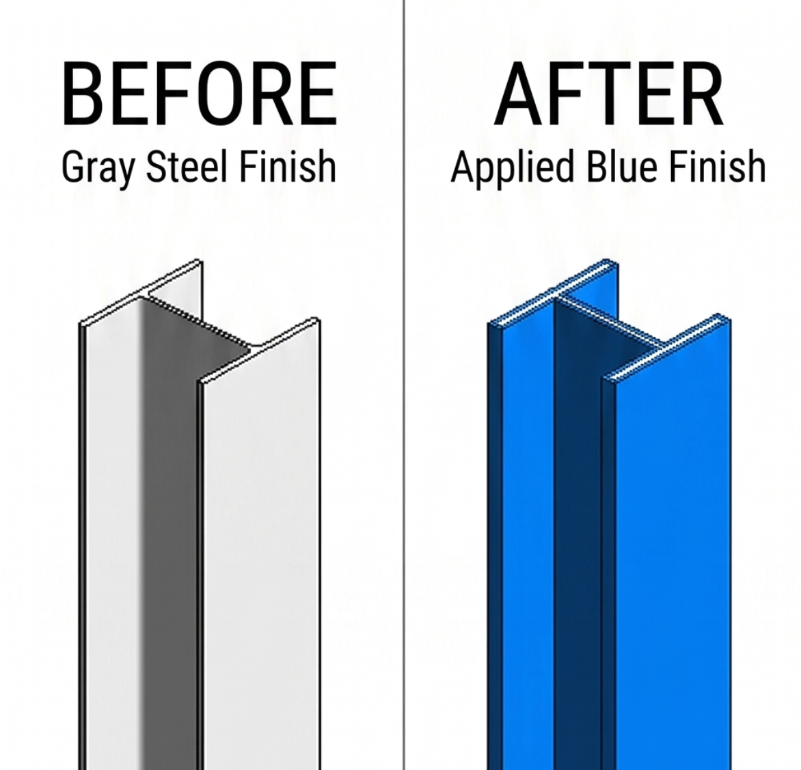
This might work if you are applying a paint to a steel column but more often than not you will need to add finish that goes around the steel column. In that case you could temporarily add rooms around these columns and use the room-based part of the script or figure out a workaroud, for example using rectangular columns first and later replacing them with the correct column type to achieve an effect similar to the one below:
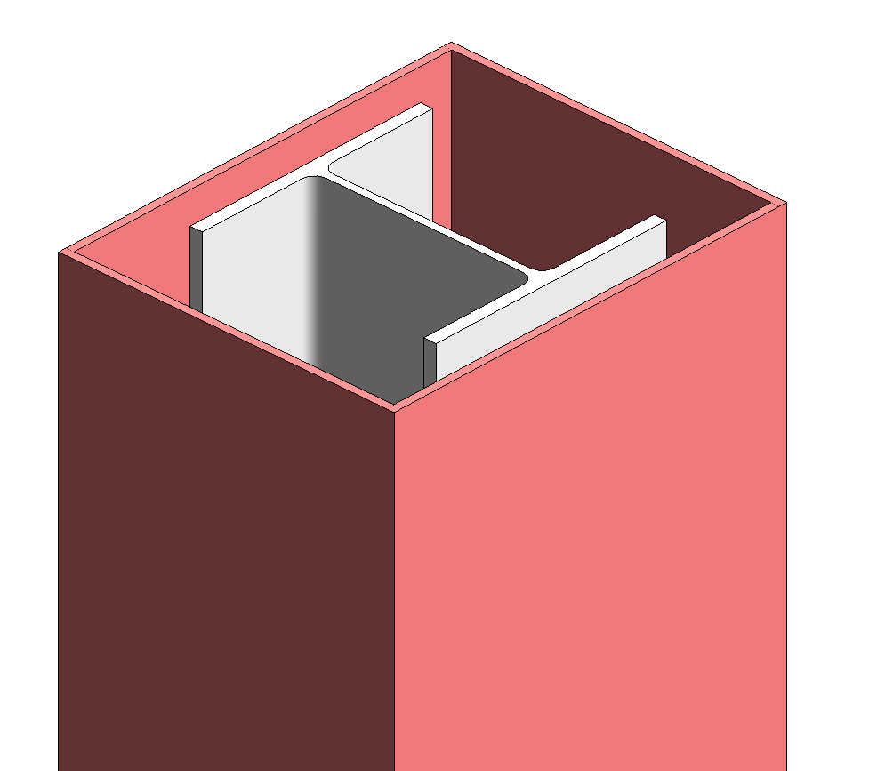
Hopefully this script will help you save a bit of time and effort. If you have any questions or feedback, feel free to reach out. You can download the script by clicking the button below or by pulling it from my GitHub repository.
Download Solution